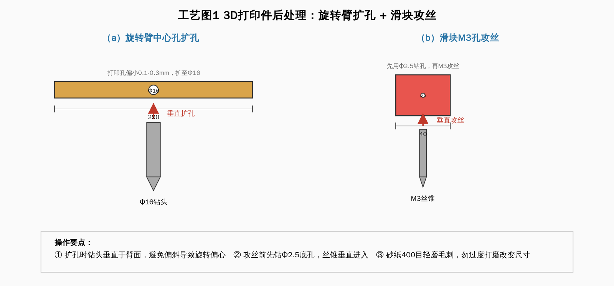
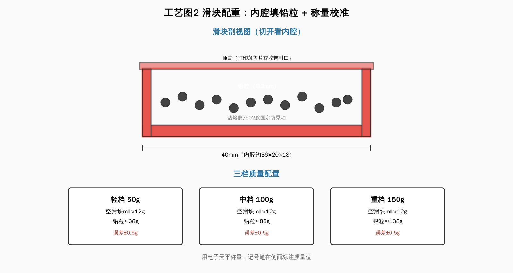
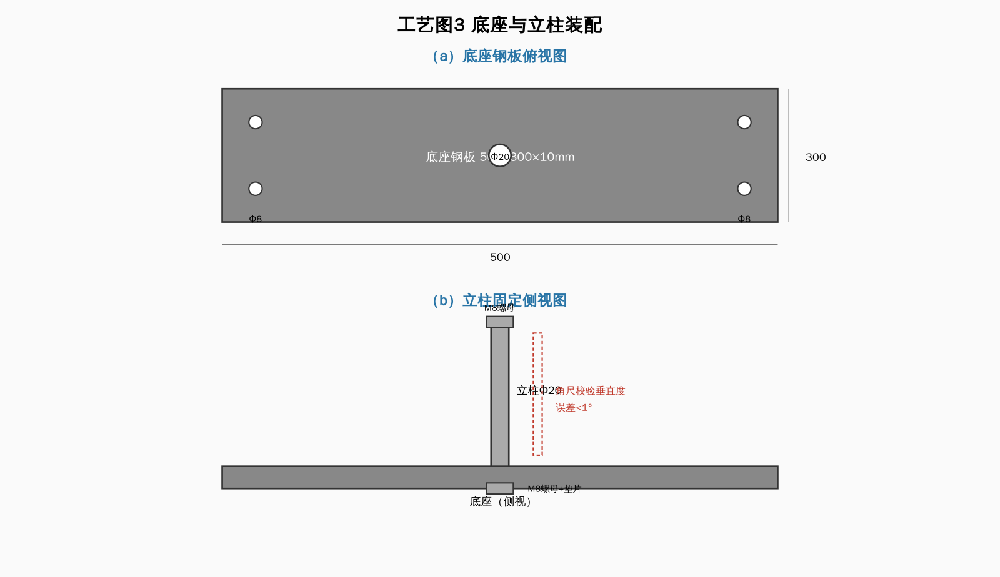
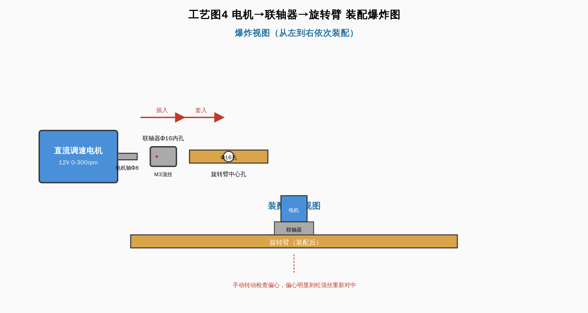
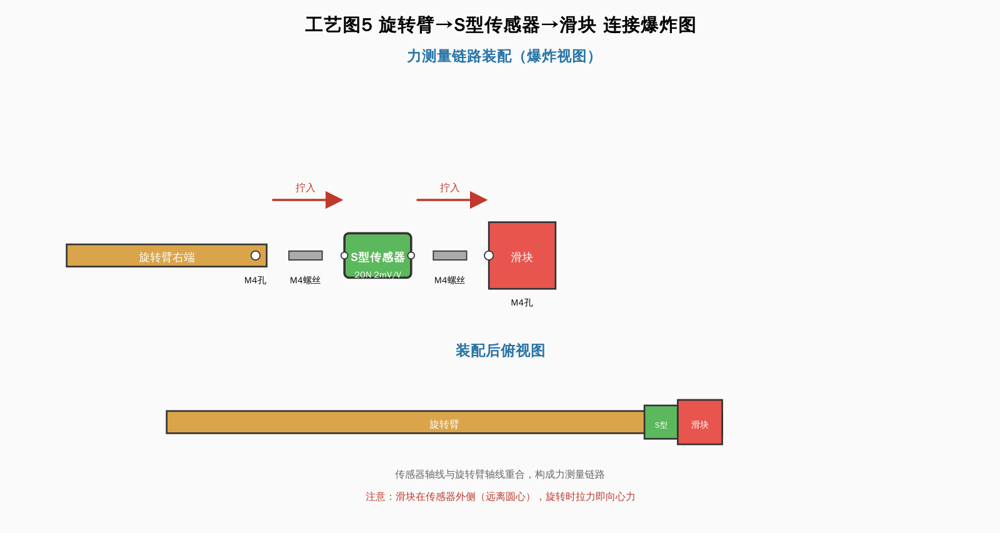
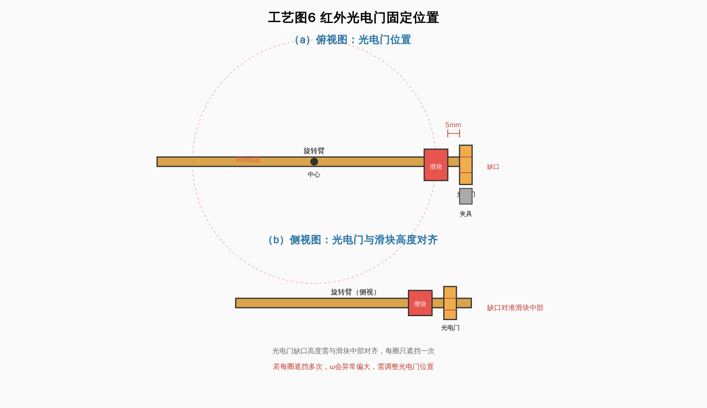
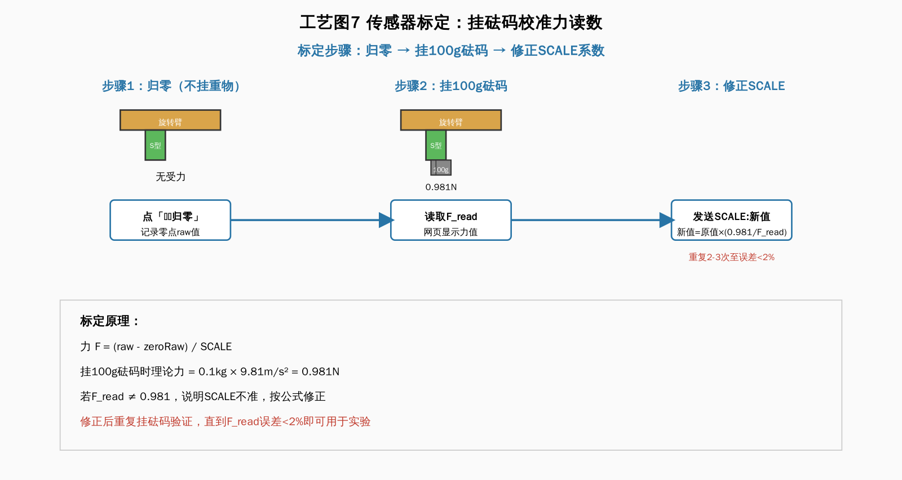

方案A 向心力定量演示仪 - 零件制作工艺步骤（配装配图）
本指南分4部分：①3D打印件制作 ②机械件加工与装配 ③电子件接线 ④整机调试。每一步配装配示意图，预计总工时8-12小时（含打印等待）。
一、3D打印件制作（旋转臂 + 滑块 + 配重）
1.1 准备模型文件
- 1将
stl/旋转臂.stl 和 滑块.stl 拷贝给打印店，或自行用切片软件（Cura/PrusaSlicer）打开。
- 2切片参数设置：层高0.2mm，填充率30%（网格填充），壁厚1.2mm（3层外壳），喷嘴温度200℃，热床60℃，打印速度50mm/s，回抽距离6mm。
- 3支撑设置：旋转臂中心孔与滑块内腔无需支撑（悬臂角度<45°的桥接结构可自支撑）；若打印店默认加支撑，需手动移除中心孔支撑。
1.2 打印后处理

工艺图1 3D打印件后处理：旋转臂中心孔扩孔 + 滑块M3孔攻丝
- 1用美工刀去除打印底座（raft/brim），用砂纸(400目)轻磨毛刺。
- 2旋转臂中心孔用Φ16钻头手工扩孔（3D打印孔通常偏小0.1-0.3mm），确保电机轴可顺畅插入。扩孔时垂直操作，避免偏斜。
- 3滑块M3安装孔用M3丝锥攻丝（或直接用Φ2.5钻头打孔后用M3螺丝自攻）。
- 4滑块内腔检查：若顶面有拉丝，用尖嘴钳清理，确保铅粒可放入。
1.3 滑块配重（制作3个质量档位）

工艺图2 滑块剖视图：内腔填铅粒 + 三档质量配置
- 1用电子天平称量空滑块质量 m₀（约12-15g）。
- 2计算所需铅粒质量：轻档50g需铅粒 50-m₀≈38g；中档100g需≈88g；重档150g需≈138g。
- 3将铅粒填入滑块内腔，用热熔胶或502胶固定（防止旋转时铅粒晃动影响质心）。
- 4盖上顶盖（可用打印的薄盖片，或用胶带封口），再次称量确认总质量为50/100/150g（误差±0.5g）。
- 5用记号笔在滑块侧面标注质量值。
安全提示：铅粒有毒性，操作后洗手。若担心安全，可用钢珠或螺母替代铅粒，但体积较大需调整内腔尺寸。
二、机械件加工与装配
2.1 底座与立柱

工艺图3 底座钢板俯视图 + 立柱固定侧视图
- 1底座钢板按500×300×10mm激光切割，四角钻Φ8安装孔（用于固定到实验台）。表面可喷防锈漆。
- 2立柱Φ20×320mm，顶端车M8螺纹（长20mm），底端焊接或用螺母固定到底座中心。
- 3立柱与底座垂直度用角尺校验，误差<1°。
2.2 电机与转轴装配

工艺图4 电机→联轴器→旋转臂 装配爆炸图 + 装配后侧视图
- 1电机用M4螺丝固定到立柱中部的电机支架（可用现成L型铝型材）。
- 2电机轴通过联轴器连接旋转臂中心孔。联轴器内孔Φ16，用M3顶丝紧定电机轴与旋转臂。
- 3旋转臂安装后，手动转动应顺畅无卡顿。若偏心明显，松开顶丝重新对中。
- 4电机调速器固定在底座侧面，便于操作。
2.3 传感器与光电门安装

工艺图5 旋转臂→M4螺丝→S型传感器→M4螺丝→滑块 连接爆炸图
- 1S型传感器两端M4螺纹：一端用M4螺丝连接滑块，另一端连接旋转臂右端安装孔。传感器轴线与旋转臂轴线重合。

工艺图6 红外光电门固定位置：俯视图 + 侧视图（缺口对准滑块中部）
- 2红外光电门用夹具固定在旋转臂外侧（滑块经过的位置），光电门缺口朝向滑块路径，间距约5mm。
- 3配重块安装在旋转臂左端（与滑块对称位置），用M3螺丝固定，用于平衡转轴受力。
三、电子件接线
3.1 接线（参照接线图）
- 1S型传感器4线接HX711：E+红→E+，E-黑→E-，A+绿→A+，A-白→A-。若读数为负，交换A+/A-即可。
- 2HX711接ESP32：VCC→3V3，GND→GND，SCK→GPIO32，DOUT→GPIO33。
- 3光电门接ESP32：VCC→3V3，GND→GND，DOUT→GPIO27。
- 4电机接稳压电源（12V），电机调速器串联在中间。ESP32用USB线连电脑供电+通信。
注意：ESP32的3V3引脚电流有限(<50mA)，HX711+光电门总电流约15mA，可安全共用。若再加其他传感器，需用独立3.3V电源。详细接线见 接线图/接线图.png。
3.2 固件烧录
- 1安装Arduino IDE，在「文件→首选项」添加ESP32开发板管理URL：
https://raw.githubusercontent.com/espressif/arduino-esp32/gh-pages/package_esp32_index.json
- 2「工具→开发板→开发板管理器」搜索esp32并安装。
- 3在「库管理器」安装
BLEDevice（ESP32 BLE Arduino）。
- 4打开
esp32_firmware/centrifugal_force.ino，选择开发板「ESP32 Dev Module」，USB端口选择ESP32对应的COM口。
- 5点击上传（→按钮），等待编译烧录完成。串口监视器(115200bps)应显示启动信息。
四、整机调试
4.1 传感器标定

工艺图7 传感器标定三步骤：归零 → 挂100g砝码 → 修正SCALE系数
- 1上电预热3分钟，使HX711零点稳定。
- 2不挂任何重物，在网页应用点「⚖️归零」，ESP32自动记录零点原始值。
- 3挂一个已知质量砝码（如100g=0.981N），记录网页显示的力值F_read。
- 4计算标定系数：SCALE = 原始SCALE × (0.981 / F_read)。在串口发送
SCALE:新值 更新。
- 5重复2-4步骤2-3次，直到F_read与理论值误差<2%。
4.2 光电门测试
- 1手动拨动旋转臂，使滑块经过光电门缺口，串口应显示非零period和rpm。
- 2启动电机低速旋转，观察网页ω值是否稳定（连续10个读数波动<5%为合格）。
- 3若ω不稳定，检查光电门固定是否松动、滑块遮挡是否完全。
4.3 试采数据
- 1设置 m=100g, r=15cm，电机调至中速。
- 2网页点「连接ESP32」→「开始采集」→「记录数据点」，记录6组不同转速的数据。
- 3点「拟合」，检查R²是否>0.95，斜率是否接近 mr=0.015。若偏差大，回到4.1重新标定。
完工标准：三组实验(F-ω²、F-r、F-m)各6个数据点，拟合R²>0.95，相对误差<5%，即可用于教学展示与视频录制。